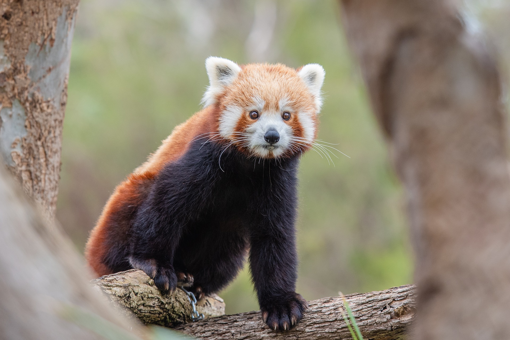
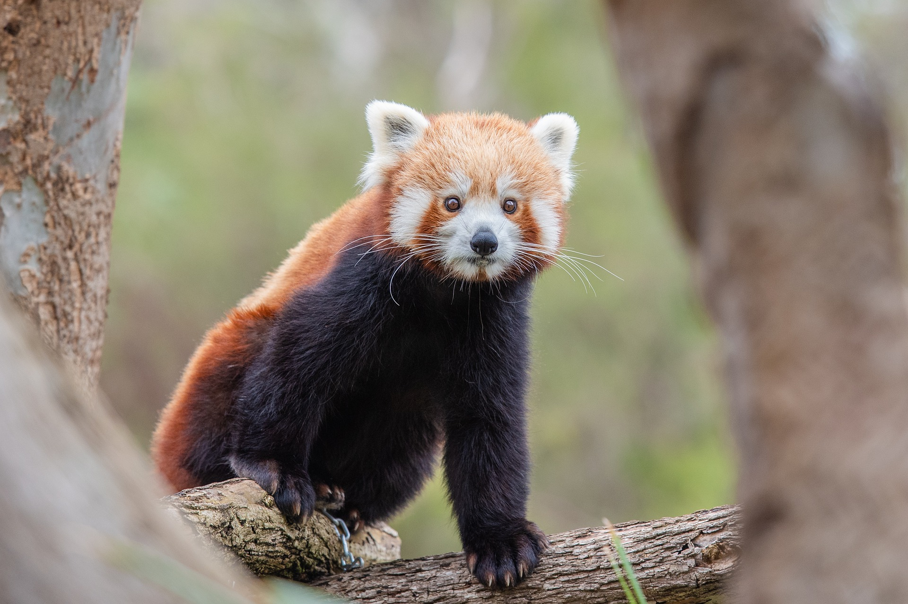

Biodiversity Conservation
The natural world relies on a diversity of organisms to keep it in balance, healthy and thriving. To ensure we protect and nourish this biodiversity it is imperative that we gather and disseminate essential knowledge that can empower people, industries and governments and help them live in harmony with nature.

 

Biodiversity – the diversity of life on earth – is integral to a healthy and stable environment. Diversity of life ensures environmental resilience, provides humans with the life systems on which they rely and enriches life on earth. Due to human activities, the planet is currently experiencing a biodiversity crisis which is resulting in the loss of species and populations of species and the habitats that support them. In Europe, threats to biodiversity include changes in the way land and sea are used, pollution, overexploitation, invasive alien species and climate change - amongst many more.
The IUCN produces a range of ‘knowledge products’ that allow monitoring of the state of nature, including the IUCN Red List of Threatened Species TM which examines the extinction risk of species, IUCN Red List of Ecosystems that looks at the risk of ecosystem collapse, and the IUCN Green List of Conserved and Protected Areas which provides a best-practice standard for protected areas. These knowledge products are used to support and guide conservation action, policy-making processes and decision-making related to nature conservation.
The European Biodiversity Conservation Team in Brussels are a part of the IUCN Global Species Programme, and focus to protect biodiversity and enhancing protected area management across Europe. The team work on a range of issues, guided by regional policies and strategies, like the EU Biodiversity Strategy, that help to better protect and promote Europe’s biodiversity and ecosystems. We do this by increasing the understanding of the state of nature through generating, mobilizing and transferring technical and scientific knowledge about species and their habitats, and protected areas – a task much facilitated by the application of the IUCN knowledge products.
The European Biodiversity Conservation Team in Brussels coordinates the IUCN European Red List initiative and the Green List for the Natura 2000 network in Europe. Additionally, the team provide technical and scientific knowledge to the European Commission to support the implementation of several regional environmental policies and initiatives – namely the EU Regulation on Invasive Alien Species and the EU Pollinators Initiative. Our work is underpinned by a portfolio of projects, implemented in collaboration with a network of partners, IUCN members and commissions. We primarily work with the Species Survival Commission (SSC) which is the largest of the IUCN commissions.
Statistics on threatened species compiled from Table 1 of IUCN’s Red List of Threatened SpeciesTM (2008)
| Described Species | Evaluated by IUCN | Threatened | % Threatened based on number evaluated | |
|---|---|---|---|---|
| Vertebrates | 61,259 | 26,604 | 5,966 | 22 |
| Mammals | 5,488 | 5,488 | 1,141 | 21 |
| Birds | 9,990 | 9,990 | 1,222 | 12 |
| Reptiles | 8,734 | 1,385 | 423 | 31 |
| Amphibians | 6,341 | 6,260 | 1,905 | 30 |
| Fish | 30,700 | 3,481 | 1,275 | 37 |
| Invertebrates | 1,232,384 | 6,161 | 2,496 | 41 |
| Insects | 950,000 | 1,259 | 626 | 50 |
| Molluscs | 81,000 | 2,212 | 978 | 44 |
| Crustaceans | 40,000 | 1,735 | 1,735 | 35 |
| Corals | 2,175 | 856 | 235 | 27 |
| Arachnids | 98,000 | 32 | 18 | 56 |
| Others | 61,209 | 67 | 33 | 49 |
| Plants | 298,506 | 12,055 | 8,457 | 70 |
| Lichens, Mushrooms, Brown Algae | 50,040 | 18 | 9 | 50 |
| Total | 1,642,189 | 44,838 | 16,929 | 38 |
For more information, please contact: